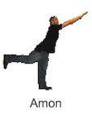

SCRATCH
↓私の作ったイベント↓
「バスとかけっこ」
＜制作手順＞
1.背景の設定
新しい背景（写真マーク） を選択＞テーマ「街」を選択＞「night city with street」を選択
を選択＞テーマ「街」を選択＞「night city with street」を選択

2.スプライトの削除
「猫」のスプライトを選択＞ダブルクリック＞削除
3.新しいスプライトの設定
新しいスプライト＞キャラをクリック＞
人カテゴリーから「Amon」を選択＞乗り物カテゴリーから「Bus」を選択

4.スプライトのサイズ調整
「Amon」を選択＞コスチューム＞選択ツールで選択＞バスにサイズを合わせる

5.「Amon」のスクリプト設定
イベント「グリーンのフラグがクリックされたとき」＞制御「ずっと」「100回繰り返す」を選択＞
動き「X座標を-195にする」「10歩動かす」を選択＞それぞれを組み合わせる

6.「Bus」のスクリプト設定
イベント「グリーンのフラグがクリックされたとき」＞制御「ずっと」「100回繰り返す」を選択＞
動き「X座標を−210にする」「X座標を6.5ずつ変える」を選択＞音「の音を鳴らす」に「dance celebrate」を選択
完成！
＜レビューを受けて＞
before:
Amonが、ただバスを追いかけているだけで、あまりイベントっぽくなかった
After:
以下のように、背景・各スクリプトのプログラムを書き換え、イベントっぽさをだした
背景
(ずっと夜の街にするのではなく、スクリプトの動作後に背景が変化するようにした)
Amon
(ただ進ませるだけだとどんなイベントか分かりづらいので、動作後に「３マス進む」と言うようにした)